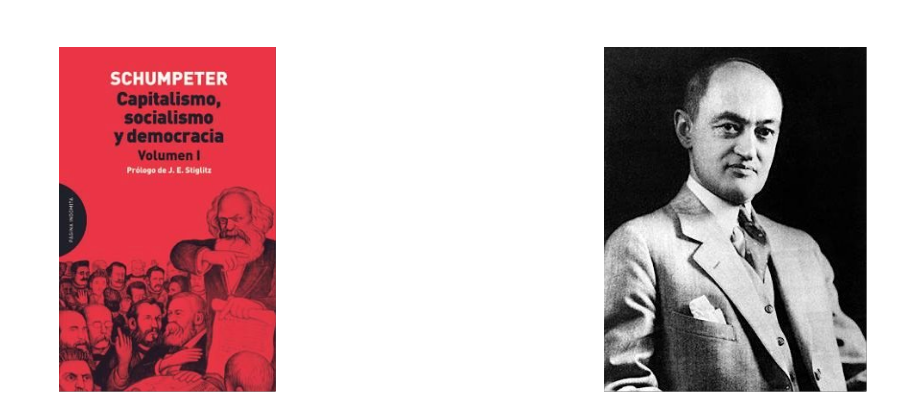
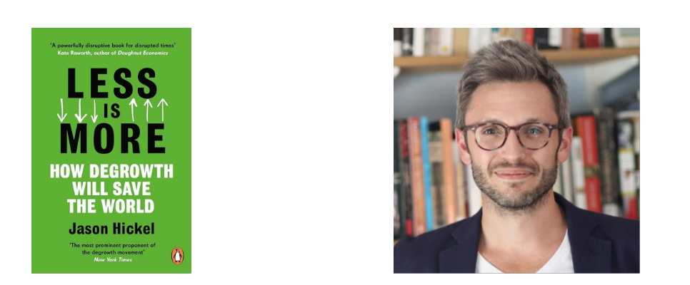

Sesión 1- Regulación Digital
Historia de la tecnología
Concepto de tecnología
Definición vaga y valorativa: La tecnología es difícil de definir, ya que en su uso común se asocia con objetos físicos y se asume que la tecnología más nueva es mejor.
Tecnología vs. artefacto: Los objetos físicos, como una bombilla o una cuchara, son productos de la tecnología, pero no son la tecnología en sí. La tecnología es un sistema que incluye conocimientos y comportamientos.
Una bombilla, como objeto físico, es simple, pero requiere un sistema complejo (producción de electricidad, red de distribución) para funcionar como tecnología.
Tecnologías sin artefactos físicos: Algunas tecnologías, como la educación o el lenguaje, no producen un producto físico, pero son esenciales en nuestra sociedad.
Entender el contexto social: Para comprender una tecnología, es necesario entender la red de conocimientos y el contexto social en el que fue creada, ya que el mismo objeto puede tener diferentes significados y usos en distintas culturas.
Importancia del contexto histórico: Para valorar adecuadamente las tecnologías del pasado, debemos entender el contexto social y educativo en el que surgieron.
Concepto de invención
Definición de invención: La invención es el proceso de identificar un problema, imaginar una solución y tomar medidas para alcanzarla, y no siempre implica la creación de un objeto físico.
Historias de inventores: Los inventores, a menudo presentados como héroes que enfrentan adversidades, se han convertido en figuras icónicas en la historia, con historias que resaltan la curiosidad, la persistencia y la posibilidad de que individuos cambien el curso de la historia.
Diferencia entre invención y tecnología: Aunque las invenciones son importantes, no siempre se convierten en nuevas tecnologías. Para que una invención sea exitosa, debe ser adoptada por la sociedad, lo que requiere aceptación social y utilidad técnica.
Aceptación social de las invenciones: No todas las invenciones exitosas son adoptadas, y algunas que son menos útiles logran ser aceptadas, lo que resalta la importancia del contexto social y cultural en la adopción de nuevas tecnologías.
¿Qué estándar usamos?
Progresismo y presentismo: El progresismo es la idea de que el desarrollo sigue una línea de mejora constante, mientras que el presentismo juzga el pasado con los estándares del presente.
Conocimiento vs. información: La tecnología moderna nos ha dado acceso a más información, pero eso no significa que tengamos un conocimiento superior al de nuestros antepasados.
Interrelación de tecnologías: La tecnología no se desarrolla de manera lineal; antiguas y nuevas tecnologías se mezclan y se transforman a lo largo del tiempo y en diferentes lugares.
Ejemplo del error histórico: La falsa creencia de que las personas en el pasado pensaban que la Tierra era plana demuestra los peligros de asumir la ignorancia de nuestros antepasados.
¿Qué rol cabe a la tecnología?
Relación entre tecnología y sociedad: Las sociedades dependen de la tecnología para sobrevivir, lo que genera una tensión entre el uso de la tecnología y las normas sociales.
Determinismo tecnológico: Propone que la tecnología determina el desarrollo social, pero esta idea es limitada y no siempre aplicable, como en el caso de la imprenta y la democracia.
Críticas al determinismo tecnológico:
No todas las tecnologías llevan inevitablemente a un desarrollo social específico.
El determinismo ignora la resistencia al cambio tecnológico en la historia.
Asume que la sociedad es pasiva y que el materialismo es el mejor criterio de éxito social.
Contribución de Jacques Ellul: Introdujo el concepto de “técnica” para diferenciar entre el artefacto y el sistema, y advirtió que la búsqueda de eficiencia técnica puede sacrificar la humanidad y la moralidad.
Condiciones
Condiciones favorables para la innovación:
Competencia: Fomenta la innovación, especialmente en un “mercado de ideas” dentro de un contexto cultural común.
Actitud cultural favorable a la novedad: Sociedades interesadas en lo nuevo tienden a aceptar más fácilmente las innovaciones tecnológicas.
Flexibilidad social: La movilidad social y la capacidad de adaptación permiten que la innovación prospere.
Factores que limitan la innovación:
Agitación social: Colapso económico o guerra pueden frenar la innovación.
Falta de educación: Limita la difusión y el desarrollo de nuevas tecnologías.
Conformidad social: Sociedades con estricta conformidad social tienden a ser menos innovadoras.
Esfuerzos gubernamentales: Los gobiernos han intentado fomentar la innovación a través de premios, incentivos y educación, con resultados variados.
Innovación dirigida: Aunque se ha intentado estimular la innovación mediante inversiones directas, el éxito no está garantizado, como se muestra en ejemplos históricos tanto exitosos como fallidos.
Conflicto
Ganadores y perdedores: La introducción de nuevas tecnologías crea beneficios para algunos (ganadores) y pérdidas para otros (perdedores).
Impacto en el empleo:
Tecnologías nuevas desplazan empleos tradicionales (ej., tejedores, escribas).
A largo plazo, suelen crearse más empleos de los que se eliminan.
Ganadores:
Aquellos que logran capitalizar la nueva tecnología, a menudo alcanzando gran riqueza.
Nuevas clases de empleo, altamente técnicos y bien remunerados son creadas.
Perdedores:
Individuos desplazados que pueden caer en la pobreza y el desempleo.
Regiones y culturas enteras que son desplazadas o destruidas por nuevas tecnologías.
Historia de la tecnología:
- Suele ser una historia contada por los ganadores, mientras que las sociedades que no pudieron adaptarse o resolver problemas tecnológicos suelen ser olvidadas.
Trampas tecnológicas
Definición de trampas tecnológicas: Situaciones donde la perfección de tecnologías conduce a consecuencias negativas no previstas.
Ejemplos históricos:
Domesticación: Sacrificio de la autonomía de los cazadores-recolectores por la estabilidad agrícola.
Irrigación: Aumento de la producción agrícola seguido por la salinización y el colapso social.
Uso de la madera: Agotamiento de recursos, como en la Isla de Pascua, que llevó al colapso de la sociedad.
Trampa tecnológica moderna:
- Petróleo: Dependencia extrema de los productos derivados del petróleo en la industria moderna, con el riesgo de agotamiento sin alternativas claras.
Tecnología y comunicación
Relación entre tecnología y comunicación: La forma en que la información se mueve afecta la difusión y percepción de la tecnología.
Marshall McLuhan: “El medio es el mensaje”, la forma de comunicación moldea la respuesta y percepción de la información.
Harold Innis: La comunicación fue clave en la formación y control de imperios, como el Nilo en Egipto, que actuaba como sistema de comunicación.
Redes y estructuras sociales: Redes como caminos, telégrafos y la radio han permitido la creación de estructuras sociales más grandes.
- Similitudes entre redes: Las redes sociales y tecnológicas comparten estructuras con enlaces formales e informales que facilitan la transmisión de información.
Pensadores sobre el desarrollo
Niall Ferguson - Killers Applications

Las “killers applications” de acuerdo a Ferguson
Competencia:
- Ferguson argumenta que la competencia política y económica dentro de Europa fomentó la innovación y el progreso. La fragmentación política, con múltiples estados rivales, creó un ambiente en el que ninguna potencia tenía el monopolio absoluto, lo que impulsó la competencia en áreas como el comercio, la guerra, y la tecnología.
Ciencia:
- El desarrollo de la ciencia moderna, que comenzó con la Revolución Científica del siglo XVII, proporcionó a las sociedades occidentales una comprensión más profunda del mundo natural, permitiendo avances tecnológicos que dieron a Europa una ventaja sobre otras culturas.
Propiedad Privada:
- La protección de la propiedad privada y el respeto por los derechos individuales en Occidente fomentaron el desarrollo económico. Ferguson sostiene que la existencia de un marco legal sólido que protegía la propiedad y los contratos fue fundamental para el surgimiento del capitalismo en Occidente.
Medicina:
- Los avances en la medicina occidental, especialmente durante los siglos XIX y XX, permitieron a las sociedades europeas y sus colonias superar enfermedades que devastaban a otras poblaciones. Esto contribuyó a la expansión y consolidación del dominio occidental.
Consumo:
- El auge de una sociedad de consumo en Occidente creó mercados masivos que incentivaron la producción y la innovación. Ferguson sugiere que la capacidad de los países occidentales para generar riqueza a través del consumo masivo fue crucial para su crecimiento económico.
Ética del Trabajo:
- Finalmente, Ferguson destaca la importancia de la ética del trabajo protestante, una idea popularizada por el sociólogo Max Weber. Según esta perspectiva, la ética del trabajo y el énfasis en la disciplina y la frugalidad en las sociedades protestantes fomentaron la acumulación de capital y el desarrollo económico.
Robert Nisbet - Origen histórico de la noción de progreso
Orígenes del progreso
Noción Antigüa del Cambio
Las civilizaciones antiguas, como las griega y romana, reconocían el cambio y la mejora en aspectos específicos de la vida, como la tecnología o la organización política, pero no concebían un progreso lineal y continuo en la historia.
Los griegos, por ejemplo, a menudo veían el pasado como una era dorada, un tiempo de mayor virtud y cercanía a los dioses, lo que no se alinea con la idea de progreso como avance constante hacia un futuro mejor.
Progreso en la Tradición Judeocristiana
Según Nisbet, la idea de un progreso lineal y continuo se enraíza más claramente en la tradición judeocristiana, donde la historia se percibe como un proceso dirigido por un propósito divino.
La narrativa bíblica, que comienza con la creación y se dirige hacia una redención final, ofrece una visión teleológica de la historia, en la que los eventos se encaminan hacia un desenlace determinado por la voluntad de Dios.
Esta perspectiva histórica aporta una base para la idea de que la humanidad avanza hacia un objetivo, un concepto que luego será secularizado en la modernidad.
Progreso en la modernidad
Secularización de la Idea de Progreso
Durante la Ilustración, el concepto de progreso se desvincula del marco religioso y se seculariza, convirtiéndose en un principio central del pensamiento occidental.
La razón, la ciencia y la educación emergen como los nuevos motores del progreso, vistos como herramientas que permiten a la humanidad avanzar hacia un futuro más racional y mejorado.
Filósofos como Voltaire, Condorcet y Kant promueven la idea de que la humanidad puede y debe mejorar a través de la acumulación de conocimiento y la aplicación de la razón.
Condorcet, en particular, en su obra “Esbozo de un cuadro histórico de los progresos del espíritu humano”, visualiza la historia humana como una serie de etapas de progreso hacia un estado de perfección.
Kant, por su parte, ve el progreso moral y ético como el resultado del ejercicio de la razón en la vida pública y la educación.
Justificación de Revoluciones Sociales y Políticas:
Nisbet observa que la visión optimista del progreso durante la Ilustración no solo alimentó el desarrollo intelectual, sino que también justificó muchas de las revoluciones sociales y políticas de la época.
La Revolución Francesa, por ejemplo, se enmarca dentro de esta lógica de progreso, donde la razón y los derechos humanos se erigen como pilares para construir una nueva sociedad más justa y racional.
Este optimismo en la capacidad de la humanidad para moldear un futuro mejor a través del progreso racional también influenció movimientos como la abolición de la esclavitud y la promoción de la democracia.
Críticas al Progreso
Cuestionamiento de la Inevitabilidad del Progreso
A partir del siglo XIX, pensadores como Friedrich Nietzsche, Karl Marx y Sigmund Freud comenzaron a cuestionar la idea de que la historia avanza inevitablemente hacia un estado mejor.
Nietzsche: Criticó la noción de progreso como una ilusión que enmascara la decadencia moral y espiritual de la sociedad. Para Nietzsche, la creencia en un progreso inevitable es un síntoma de debilidad y negación de la realidad.
Marx: Aunque veía la historia como un proceso dialéctico, Marx no creía que el progreso fuera automático ni siempre positivo. Según Marx, el progreso bajo el capitalismo lleva a la alienación y la explotación, y solo la revolución proletaria podría conducir a una verdadera mejora social.
Freud: Freud argumentó que el progreso científico y tecnológico no necesariamente lleva a la felicidad humana, sino que puede exacerbar las tensiones psíquicas y los conflictos internos.
Impacto de las Guerras Mundiales
Las dos guerras mundiales del siglo XX sacudieron profundamente la fe en el progreso. La brutalidad, la destrucción masiva y el uso de la tecnología para la guerra devastaron la noción de que la humanidad estaba en un camino inevitable hacia la mejora continua.
El Holocausto, los bombardeos atómicos y los genocidios del siglo XX son ejemplos de cómo el “progreso” tecnológico y científico puede ser utilizado para fines destructivos, llevando a una reevaluación crítica de la idea de progreso.
Progreso como Ideología
La Ideología del Progreso en la Modernidad
Nisbet sostiene que la idea de progreso se institucionalizó en la modernidad, convirtiéndose en una ideología dominante que guía no solo el pensamiento filosófico y político, sino también la ciencia, la tecnología y la economía.
Esta ideología del progreso se basa en la creencia de que el desarrollo continuo en todos los aspectos de la vida humana es tanto deseable como inevitable, y que cualquier retroceso es temporal o corregible.
Peligros de la Ideología del Progreso
Nisbet advierte que aceptar la ideología del progreso sin cuestionamientos puede ser peligroso. Esta creencia puede conducir a una complacencia, donde las personas asumen que el progreso resolverá todos los problemas sin necesidad de una acción consciente y crítica.
Además, la ideología del progreso ha sido utilizada para justificar acciones moralmente cuestionables en nombre de un “bien mayor”. Ejemplos incluyen la explotación colonial, las políticas eugenésicas y la destrucción ambiental, todas defendidas en algún momento como parte de un supuesto avance hacia un futuro mejor.
Progreso y Desencanto
El Desencanto en la Modernidad
A medida que la fe en el progreso no cumplió con sus promesas, especialmente tras las devastaciones del siglo XX, surgió un desencanto generalizado con la idea de que el progreso podría garantizar un futuro mejor.
Este desencanto se reflejó en movimientos filosóficos y culturales que cuestionaron la capacidad del progreso para resolver problemas fundamentales de la humanidad, como la alienación, la desigualdad y la destrucción ambiental.
Escepticismo sobre el Progreso
El desencanto llevó a un escepticismo creciente sobre la capacidad del progreso para resolver los problemas humanos, particularmente en el contexto de las crisis contemporáneas, como el cambio climático, las crisis económicas y las tensiones sociales.
Nisbet señala que este escepticismo ha provocado una reevaluación de lo que entendemos por “progreso”, sugiriendo que la mejora no es siempre lineal ni inevitable, y que debe ser replanteada en términos más humanos y sostenibles.
Joseph Schumpeter - Destrucción creativa y sus elementos

Elementos de la Destrucción Creativa
Innovación como Motor del Cambio
Papel de los Emprendedores:
- Los emprendedores son vistos como los agentes del cambio, introduciendo innovaciones que alteran las estructuras económicas existentes. Ellos son los que desafían el statu quo al crear nuevos productos, servicios o procesos que transforman industrias enteras.
Cambio de Reglas Económicas:
- Cada innovación redefine las reglas del mercado. Por ejemplo, la invención de la máquina de vapor no solo revolucionó la producción industrial, sino que también cambió la estructura laboral, la logística y el comercio global.
Impacto en la Competencia:
- Las innovaciones pueden reducir las barreras de entrada en mercados establecidos, permitiendo a nuevas empresas competir con gigantes preexistentes, lo que puede desestabilizar industrias consolidadas.
Destrucción de Viejas Industrias
Obsolescencia Tecnológica:
- Tecnologías que antes eran dominantes pueden volverse obsoletas rápidamente. Por ejemplo, la llegada de la fotografía digital hizo que la industria del revelado fotográfico químico prácticamente desapareciera.
Quiebras y Desempleo:
- Empresas que no se adaptan a las nuevas tecnologías o modelos de negocio pueden enfrentar quiebras. Esto a menudo resulta en la pérdida de empleos en sectores que ya no son competitivos, como ocurrió con muchas fábricas durante la desindustrialización en varias economías avanzadas.
Resistencia al Cambio:
- Las industrias y sectores afectados a menudo resisten el cambio, lo que puede llevar a conflictos sociales y económicos, como huelgas laborales o lobbies que buscan mantener el statu quo.
Creación de Nuevas Oportunidades
Nacimiento de Nuevas Industrias:
- A medida que las viejas industrias se desmoronan, surgen nuevas oportunidades. Por ejemplo, la caída de la industria del carbón en muchas regiones fue acompañada por el auge de la energía renovable.
Generación de Empleo:
- Las innovaciones pueden crear empleos en sectores emergentes. La revolución digital, por ejemplo, ha dado lugar a millones de nuevos empleos en tecnología de la información, diseño de software, y comercio electrónico.
Mejora del Bienestar:
- Las nuevas tecnologías y modelos de negocio pueden mejorar la calidad de vida al ofrecer productos más eficientes, accesibles o innovadores, como ha sucedido con la evolución de la medicina y las telecomunicaciones.
Ciclo Continuo
Inexorabilidad del Proceso:
- Schumpeter subraya que la destrucción creativa es un proceso continuo y cíclico. No es un evento único, sino una dinámica constante en el capitalismo, donde cada ola de innovación eventualmente será reemplazada por otra.
Adaptación Necesaria:
- Tanto las empresas como los trabajadores deben adaptarse continuamente para sobrevivir y prosperar en un entorno de constante cambio tecnológico. Esto significa un proceso perpetuo de aprendizaje y ajuste.
Evolución del Mercado:
- Los mercados evolucionan y se transforman con cada ciclo, lo que puede llevar a cambios significativos en la estructura económica global, como la transición de una economía industrial a una economía de servicios.
Impulso del Progreso Económico
Renovación Constante:
- La destrucción creativa es vista como el mecanismo que impulsa la renovación constante de la economía. Aunque es un proceso doloroso para algunos, es esencial para el dinamismo y la evolución de la economía en su conjunto.
Crecimiento a Largo Plazo:
- Según Schumpeter, este proceso es fundamental para el crecimiento económico sostenido. A largo plazo, las innovaciones impulsan mejoras en la productividad, aumentos en el bienestar económico y el desarrollo de nuevas industrias que pueden sostener el crecimiento económico global.
Consecuencias Sociales y Económicas:
- Aunque la destrucción creativa puede causar sufrimiento en el corto plazo, como la pérdida de empleos y la dislocación social, es vista como un componente necesario del progreso y la expansión económica en el capitalismo. Schumpeter sostiene que, en última instancia, estos sacrificios conducen a un futuro de mayor prosperidad y avance tecnológico.
Jason Hickel - Menos es más

Crítica al Crecimiento Económico Perpetuo
Incompatibilidad con los Límites Planetarios:
- Hickel sostiene que el crecimiento económico perpetuo choca con los límites ecológicos del planeta. A medida que las economías crecen, la extracción de recursos naturales y la generación de desechos aumentan, lo que supera la capacidad de regeneración de los ecosistemas y lleva al agotamiento de recursos vitales.
Impacto en el Cambio Climático:
- El crecimiento económico está estrechamente vinculado al aumento de emisiones de gases de efecto invernadero. Hickel argumenta que la expansión continua del PIB agrava el cambio climático, ya que más producción y consumo implican más energía, transporte, y explotación de recursos, la mayoría de los cuales dependen de combustibles fósiles.
Pérdida de Biodiversidad:
- La demanda creciente de tierras para agricultura, minería y urbanización, impulsada por el crecimiento económico, contribuye a la deforestación y la destrucción de hábitats naturales, lo que provoca una alarmante pérdida de biodiversidad.
Insostenibilidad del Crecimiento Verde
Mito del Desacoplamiento Absoluto:
- Hickel critica la idea de que el crecimiento económico pueda desacoplarse completamente del uso de recursos y del impacto ambiental. Aunque algunas tecnologías limpias pueden reducir la intensidad de recursos por unidad de PIB, Hickel sostiene que no hay evidencia que muestre que estas mejoras puedan compensar el efecto de un crecimiento continuo.
Efecto Rebote:
- Uno de los problemas del crecimiento verde es el “efecto rebote”, donde las ganancias en eficiencia se traducen en un mayor consumo total, anulando los beneficios ambientales. Por ejemplo, la eficiencia energética en automóviles puede llevar a una reducción del costo por kilómetro, lo que incentiva a las personas a conducir más.
Tiempo Insuficiente para Abordar la Crisis:
- Hickel argumenta que, incluso si el crecimiento verde pudiera desacoplarse parcialmente del impacto ambiental, el ritmo necesario para mitigar el cambio climático y otras crisis ambientales es tan rápido que las soluciones basadas en el crecimiento económico son inadecuadas. Necesitamos reducir el consumo y la producción en las economías ricas de manera más inmediata.
Equidad Global
Redistribución del Consumo:
- Hickel plantea que las economías ricas deben reducir su consumo para liberar “espacio ecológico” que permita a los países en desarrollo mejorar su bienestar sin sobrepasar los límites planetarios. Esto implica un enfoque en la redistribución global de recursos y oportunidades.
Deuda Ecológica:
- Hickel introduce el concepto de “deuda ecológica”, donde los países desarrollados, al haber consumido desproporcionadamente los recursos del planeta, tienen una responsabilidad histórica de reducir su consumo y apoyar a las naciones en desarrollo en su transición hacia la sostenibilidad.
Enfoque en el Bienestar Humano:
- En lugar de centrarse en el crecimiento del PIB, Hickel aboga por políticas que prioricen el bienestar humano, la equidad social y la sostenibilidad ecológica. Esto incluye garantizar que las necesidades básicas estén cubiertas en todos los países, permitiendo una vida digna sin depender de un crecimiento económico perpetuo.
Justicia Climática:
- Hickel subraya la importancia de la justicia climática, donde los países que han contribuido menos al cambio climático pero que son los más vulnerables a sus efectos deben recibir apoyo y recursos de las naciones más ricas, que son las principales responsables de las emisiones históricas de carbono.
Bienestar y Decrecimiento
Reevaluación del PIB como Medida de Éxito:
- Hickel critica el uso del PIB como la medida principal de éxito económico, argumentando que no refleja el bienestar humano real ni la sostenibilidad ecológica. Propone que el éxito debe medirse en función de la calidad de vida, la satisfacción de necesidades básicas y la equidad social.
Enfoque en las Necesidades Básicas:
- En lugar de centrarse en el crecimiento económico, Hickel aboga por un modelo que garantice que todas las personas tengan acceso a alimentos, agua, vivienda, salud y educación. El objetivo es que las economías prioricen la satisfacción de estas necesidades fundamentales por encima de la acumulación de riqueza.
Sostenibilidad Ecológica:
- Hickel destaca la importancia de desarrollar economías que operen dentro de los límites planetarios, minimizando el impacto ambiental. Esto implica reducir el consumo de recursos naturales y las emisiones de carbono, protegiendo al mismo tiempo los ecosistemas y la biodiversidad.
Equidad Social:
- Hickel propone que el bienestar debe distribuirse equitativamente, asegurando que todas las personas, independientemente de su ubicación geográfica o situación económica, tengan acceso a una vida digna. Esto requiere políticas que reduzcan la desigualdad económica y mejoren la cohesión social.
Calidad de Vida vs. Consumo Material:
- En lugar de perseguir un aumento constante del consumo material, Hickel sugiere que las economías deberían enfocarse en mejorar la calidad de vida a través de servicios públicos robustos, espacios comunitarios, y una mayor cantidad de tiempo libre.
Alternativas al Capitalismo de Crecimiento
Reducción de la Jornada Laboral:
- Hickel propone reducir la jornada laboral como una forma de distribuir mejor el trabajo disponible, reducir el desempleo y dar a las personas más tiempo para actividades que no estén relacionadas con el consumo, como el ocio, la familia y la participación comunitaria.
Redistribución de la Riqueza:
- Una de las medidas clave para el decrecimiento es la redistribución de la riqueza, tanto a nivel nacional como global. Hickel aboga por impuestos progresivos y otras políticas redistributivas para reducir la desigualdad y asegurar que todos tengan acceso a los recursos necesarios.
Fortalecimiento de los Bienes Comunes:
- Hickel enfatiza la importancia de proteger y fortalecer los bienes comunes, como el agua, el aire, los bosques y otros recursos naturales, así como los servicios públicos como la educación y la salud. Estos bienes comunes deben gestionarse de manera sostenible y equitativa para beneficio de toda la sociedad.
Promoción de Economías Locales Resilientes:
- En lugar de depender de cadenas de suministro globales vulnerables y del crecimiento impulsado por las exportaciones, Hickel aboga por el desarrollo de economías locales resilientes que sean autosuficientes, sostenibles y capaces de satisfacer las necesidades de las comunidades locales.
Transición Energética:
- Hickel subraya la necesidad de una transición energética hacia fuentes renovables y sostenibles, eliminando la dependencia de los combustibles fósiles. Esto implica no solo un cambio tecnológico, sino también un cambio en los patrones de consumo y producción.
Cambio de Paradigma
Desafío a la Lógica del Crecimiento:
- El decrecimiento desafía la lógica fundamental del capitalismo de crecimiento, que se basa en la acumulación perpetua de capital y la maximización del consumo. Hickel argumenta que este modelo es insostenible y debe ser reemplazado por un enfoque que valore la estabilidad y la suficiencia.
Revalorización de la Naturaleza:
- En el paradigma del decrecimiento, la naturaleza no se ve como un recurso infinito a explotar, sino como un bien preciado que debe ser protegido y preservado. Esto implica un cambio hacia una economía que respete los límites ecológicos y valore la biodiversidad.
Importancia del Tiempo Libre:
- Hickel propone una revalorización del tiempo libre, argumentando que la obsesión con el trabajo y el consumo ha llevado a una disminución de la calidad de vida. El decrecimiento promovería un mayor equilibrio entre el trabajo y el ocio, permitiendo a las personas disfrutar de sus vidas fuera del ámbito laboral.
Fomento de la Comunidad:
- En lugar de una sociedad centrada en el individualismo y el consumo, Hickel aboga por un enfoque que valore la comunidad y la cooperación. Las economías de decrecimiento fortalecerían las redes sociales y las comunidades locales, promoviendo la solidaridad y el apoyo mutuo.
Prioridad al Bienestar sobre la Acumulación:
- El cambio de paradigma propuesto por Hickel pone el bienestar humano en el centro de la economía, desplazando el enfoque de la acumulación de riqueza y el consumo material como los principales indicadores de éxito.
Enrique Ghersi - Costo de la legalidad
Costos Económicos Directos:
- Ghersi argumenta que los costos económicos directos para cumplir con la legalidad en muchos países en desarrollo son prohibitivos. Esto incluye el pago de tasas, impuestos y tarifas oficiales que a menudo son desproporcionadamente altos en relación con los ingresos promedio de las personas y las pequeñas empresas.
Costos Sociales:
- Además de los costos monetarios, cumplir con la legalidad impone costos sociales significativos. Las personas deben navegar por sistemas burocráticos complejos que demandan tiempo y esfuerzo, lo que afecta su capacidad para trabajar y generar ingresos.
Costos Temporales:
- El tiempo invertido en cumplir con requisitos legales, como obtener licencias o permisos, puede ser extenso. Ghersi señala que estos procesos a menudo requieren múltiples visitas a oficinas gubernamentales, largas esperas y papeleo, lo que disuade a muchos de intentar operar legalmente.
Sobornos y Corrupción:
- En muchos casos, los sobornos son una parte inevitable del costo de la legalidad. Funcionarios corruptos pueden exigir pagos ilegales para acelerar los trámites o para ignorar regulaciones complicadas, lo que aumenta aún más el costo de la formalidad.
Efecto Disuasorio:
- El alto costo de la legalidad actúa como un disuasivo para que los individuos y las pequeñas empresas participen en la economía formal, lo que limita su acceso a beneficios legales como la protección de derechos de propiedad, acceso a crédito formal y la capacidad de escalar sus operaciones.
Economía Informal
Refugio en la Informalidad:
- Debido a los altos costos y barreras de entrada a la formalidad, muchas personas optan por la economía informal como una alternativa viable. Esta elección no es necesariamente una preferencia por la ilegalidad, sino una estrategia de supervivencia en un entorno económico y legal hostil.
Prevalencia de la Informalidad:
- Ghersi, al igual que Hernando de Soto, enfatiza que la economía informal no es una pequeña fracción de la economía, sino que constituye una parte sustancial del tejido económico en muchos países en desarrollo. Esto incluye desde vendedores ambulantes hasta empresas informales que operan sin cumplir con todas las regulaciones legales.
Racionalidad de la Informalidad:
- La elección de operar informalmente es racional desde la perspectiva de los costos y beneficios. La informalidad permite a las personas evitar los costos prohibitivos asociados con la legalidad y participar en actividades económicas que de otro modo serían inaccesibles.
Limitaciones de la Informalidad:
- A pesar de su racionalidad, la economía informal tiene limitaciones. Los negocios informales carecen de protección legal, acceso a servicios financieros formales y están expuestos a riesgos como la confiscación de bienes o el cierre por parte de las autoridades.
Burocracia y Corrupción
Burocracia como Barrera:
- Ghersi critica la burocracia excesiva en los países en desarrollo, donde los procedimientos legales son complicados, poco claros y requieren la navegación de múltiples agencias gubernamentales. Esta burocracia actúa como una barrera significativa para el acceso a la formalidad.
Fomento de la Corrupción:
- La burocracia engorrosa y los requisitos complejos fomentan un entorno donde la corrupción prospera. Los funcionarios pueden aprovecharse de la confusión y la necesidad de acelerar procesos para exigir sobornos, lo que aumenta el costo de la legalidad para los ciudadanos y las empresas.
Impacto en la Inversión y el Emprendimiento:
- La combinación de burocracia y corrupción desincentiva la inversión y el emprendimiento. Los empresarios pueden verse desanimados a iniciar o expandir sus negocios si anticipan que enfrentarán costos adicionales y obstáculos significativos para operar legalmente.
Erosión de la Confianza en el Estado:
- La prevalencia de la burocracia y la corrupción también erosiona la confianza de los ciudadanos en el Estado y en las instituciones legales. Cuando las personas perciben que el sistema está diseñado para beneficiarse de ellos en lugar de ayudarlos, su disposición a participar en la economía formal disminuye.
Impacto en la Pobreza y la Desigualdad
Barreras de Entrada Desproporcionadas:
- El alto costo de la legalidad afecta desproporcionadamente a las personas con menos recursos, ya que carecen de los medios financieros y el tiempo necesario para cumplir con los requisitos legales y burocráticos. Estas barreras de entrada impiden que los pobres puedan formalizar sus negocios, acceder a mercados formales y obtener protección legal.
Exclusión de Beneficios Formales:
- Las personas que no pueden acceder a la economía formal se ven privadas de importantes beneficios, como el acceso a crédito formal, seguros, protección de derechos de propiedad y la capacidad de celebrar contratos legalmente vinculantes. Esto perpetúa un ciclo de pobreza y vulnerabilidad, donde los pobres no pueden acumular capital o mejorar su situación económica.
Economía Dual:
- Ghersi argumenta que la existencia de un alto costo de la legalidad conduce a la formación de una economía dual. En esta estructura, una pequeña élite que puede permitirse los costos de la formalidad disfruta de los beneficios legales y económicos, mientras que la mayoría de la población queda atrapada en la informalidad, con acceso limitado a oportunidades económicas y sin protección legal adecuada.
Vulnerabilidad y Riesgo:
- Aquellos que operan en la economía informal están expuestos a una mayor vulnerabilidad, tanto económica como legal. Sin la protección que ofrece la formalidad, estas personas corren el riesgo de perder sus ingresos y activos en cualquier momento debido a la intervención gubernamental, la falta de derechos de propiedad claros o la imposibilidad de hacer cumplir contratos.
Reproducción de la Desigualdad:
- La perpetuación de la informalidad contribuye a la reproducción de la desigualdad social y económica, ya que los individuos y las empresas en la economía informal no pueden competir en igualdad de condiciones con aquellos en la economía formal. Esto refuerza la concentración de riqueza y oportunidades en manos de una minoría, mientras que la mayoría sigue excluida.
Reforma Legal y Desregulación
Simplificación de Procesos:
- Ghersi propone que uno de los primeros pasos para reducir el costo de la legalidad es la simplificación de los procesos burocráticos. Esto incluye la reducción del número de trámites necesarios para iniciar y operar un negocio, así como la digitalización de los procesos para facilitar el acceso y la rapidez en la gestión de permisos y licencias.
Reducción de Impuestos y Tarifas:
- Para facilitar la inclusión económica, Ghersi aboga por la reducción de impuestos y tarifas que son excesivamente altos y actúan como barreras para la formalización. Esto incluye tanto los impuestos sobre la renta como los costos asociados con la obtención de licencias comerciales y otros permisos necesarios para operar legalmente.
Eliminación de Regulaciones Innecesarias:
- Ghersi enfatiza la necesidad de eliminar regulaciones que no tienen un propósito claro o que solo sirven para complicar innecesariamente la actividad económica. La desregulación selectiva debe enfocarse en aquellas normas que no contribuyen a la protección del consumidor o del medio ambiente, sino que simplemente añaden costos y retrasos.
Marco Legal Accesible:
- La desregulación no implica la ausencia de normas, sino la creación de un marco legal que sea accesible y razonable para todos los ciudadanos. Un marco legal simplificado y justo permitiría a más personas y empresas participar en la economía formal, beneficiándose de la legalidad sin enfrentar barreras insuperables.
Legalidad como Bien Público
Accesibilidad Universal:
- Ghersi considera que la legalidad debe ser vista como un bien público, accesible para todos los ciudadanos, independientemente de su situación económica. Esto significa que el marco legal debe ser diseñado de manera que todos puedan cumplir con la ley sin enfrentar costos prohibitivos.
Responsabilidad del Estado:
- El Estado tiene la responsabilidad de asegurar que las leyes y regulaciones sean justas y no impongan cargas desproporcionadas sobre los ciudadanos. Esto incluye la necesidad de revisar continuamente las regulaciones para garantizar que sigan siendo relevantes, efectivas y no excluyan a los sectores más vulnerables de la sociedad.
Promoción de la Equidad y Justicia:
- La legalidad, según Ghersi, debería promover la equidad y la justicia, asegurando que todos los ciudadanos tengan acceso a los beneficios de operar dentro del marco legal. Esto no solo mejora la cohesión social, sino que también impulsa el desarrollo económico al permitir que más personas participen plenamente en la economía.
Desarrollo Económico Sostenible:
- Al considerar la legalidad como un bien público, se promueve un desarrollo económico más inclusivo y sostenible. Un marco legal accesible y equitativo fomenta la participación económica, reduce la informalidad y genera un entorno más justo para todos los ciudadanos.